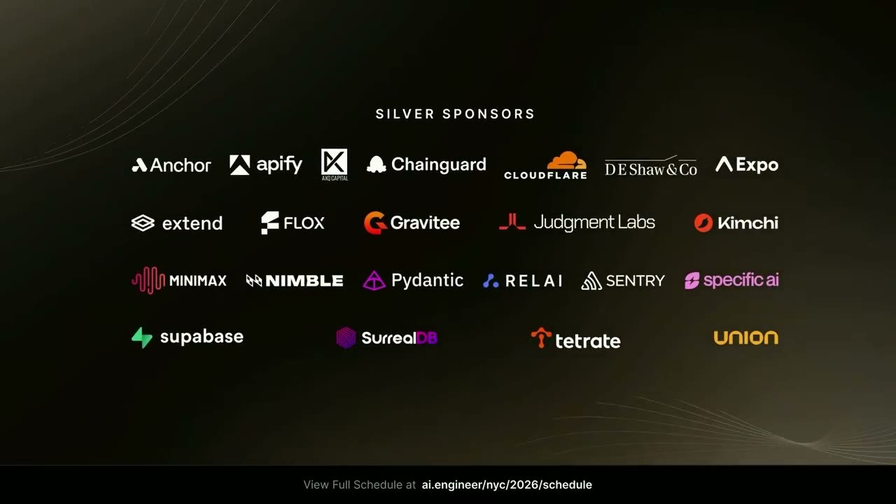
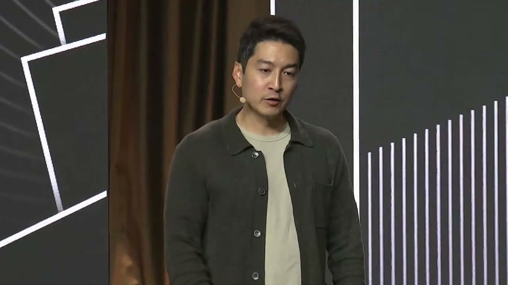

Opening the final keynote stretch
Se welcomed the Simons Room back for the closing leg of the conference, introducing her work at Turing Post explaining AI research and practical business implementation. Before the final afternoon sessions began, she paused to recognize the conference organizers, speakers, and sponsors, calling out presenting sponsor Arize, Oracle, and the gold and silver sponsor rosters displayed behind her on screen.
For Se, the value of those sponsorships comes down to putting builders in the same room where talks turn into direct working relationships with future colleagues and partners.

“Thanks to them, we're able to hear so many insightful talks, meet so many incredible people and they might become your friends, your colleagues, your partners.”00:00:07
- Se opened the final afternoon keynote block in the Simons Room on Day 2.
- She credited presenting sponsor Arize, Oracle, and the gold and silver sponsors for backing the event.
- Her framing emphasized live hallway connections alongside the technical sessions.
Evidence: transcript 00:00:07
A human-first, agent-assisted hiring workflow
Reporting back from a day spent talking with speakers and attendees, Se observed that hiring is one of the primary reasons people attend AI Engineer, to the point that even speakers on stage are simultaneously recruiting for their teams and looking for roles themselves. To help attendees act on that before heading home, she sketched a four-step afternoon project.
First, have an agent pull the conference program into a list of speakers and their companies, then rank that list yourself by whose talks and technical work you genuinely want to build alongside. Next, send the agent to those companies' careers pages to match open roles to your experience and extract published compensation ranges, updating your ranking if the pay numbers change your mind. The crucial boundary comes at the end: never let the agent auto-submit resumes, and instead use what you learned from a speaker's talk to start a real conversation in the room.
“The next step is to send your agent to those companies' careers pages, right, and find them open positions to match them to your experience, and collect the published compensation ranges.”00:02:12
- Hiring at the conference runs both ways, including speakers who are recruiting and job-hunting at once.
- Humans should rank companies by technical interest first; the agent then scrapes matching roles and published salary bands.
- Stop automation before submission: use talk context to start live conversations rather than auto-sending resumes.
Evidence: transcript 00:02:12
Handing off to Apollo Global Management and Rowspace
Wrapping up the welcome segment, Se transitioned back to enterprise implementation in financial markets. She introduced Michael Manapat, co-founder of Rowspace, and Jack McDonald, principal at Apollo Global Management (heard in the room transcript as "Apple" and "Rating Reach" for Redding Ridge), bringing them onstage for an investor-and-operator look at how Apollo puts AI to work.

“Please help me welcome Michael Manapat, co-founder of Rowspace and Jack McDonald, principal at Apollo Global Management, and CEO of Rating Reach, for AI advances, an inside look at Apollo's approach.”00:04:08
- The break closed by handing the stage to Rowspace and Apollo Global Management.
- Michael Manapat and Jack McDonald followed with an inside look at Apollo's enterprise AI approach.
- Room ASR garbled "Apollo" as "Apple" and "Redding Ridge" as "Rating Reach" during the handoff.
Evidence: transcript 00:04:08